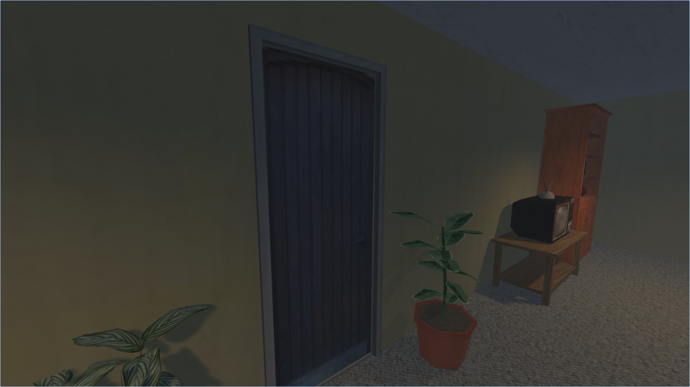
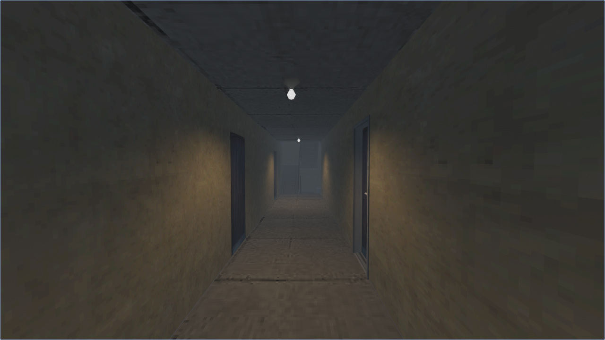
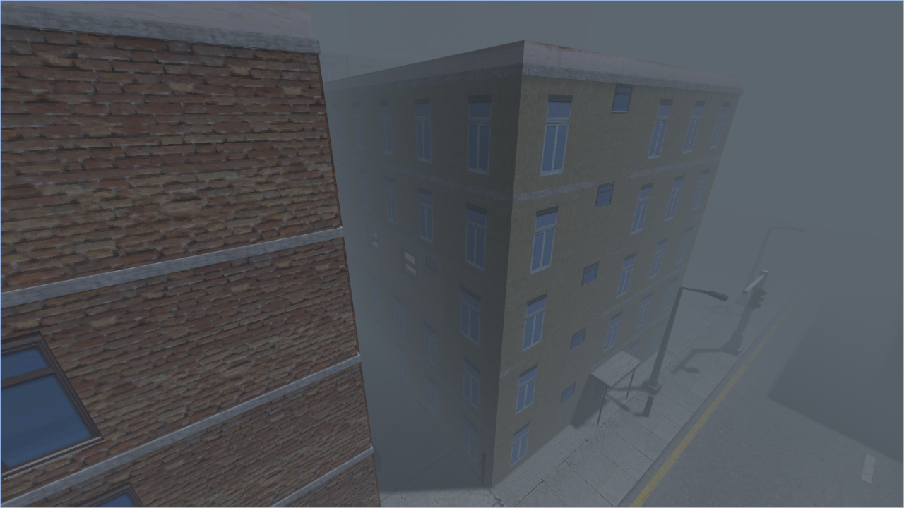
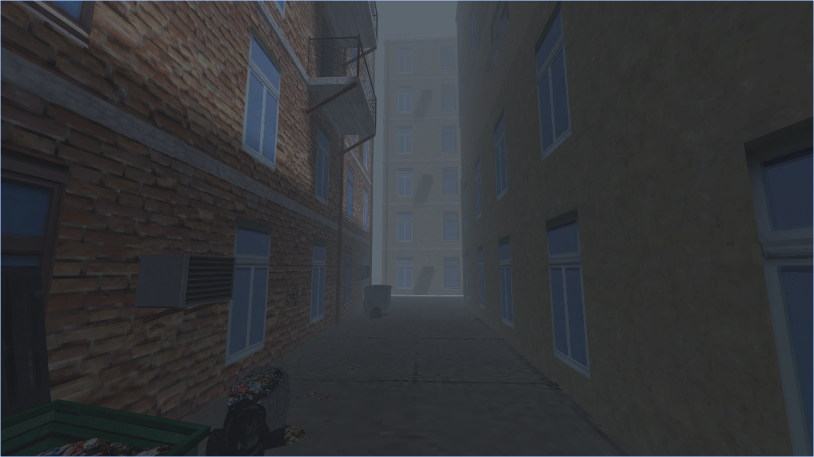
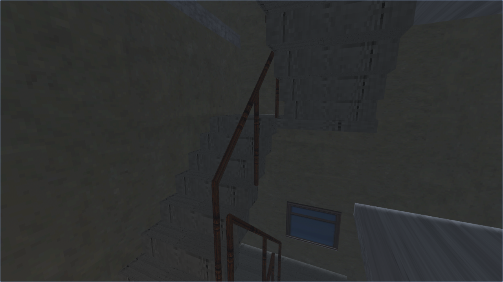
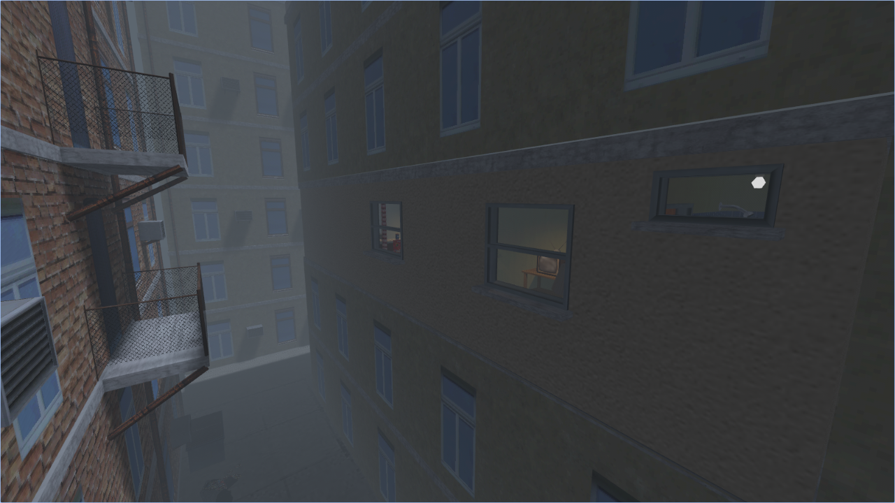

apartment — before / after


Window-visible loading: scene reduction, browser FPS and visual checks
The only rendering change is adding Bevy's DepthPrepass to the camera. It establishes depth before the main shading pass, reducing work on hidden pixels. Materials, geometry, shadows, lighting, fog, MSAA and view distances retain their settings.
Measured in the actual running WebGPU game on Intel Iris Xe (ADL GT2), Chromium 154.0.8037.97, Linux / Mesa 26.2.4. Physical canvas: 1600 × 900; browser viewport and screenshots: 1280 × 720. Both builds use the existing web profile and scene-review feature. Two six-second samples per view, ten-second initial warmup and three-second warmup after each camera change. FPS counts game canvas frame acquisitions; it is not GPU-only timing or an independent RAF counter. No concurrent build or other benchmark.
All ten before/after screenshots have zero differing pixels. The optimized build also passed pointer-lock, walking, jumping, turning, menu and restart checks. These are local browser measurements, not a guarantee for other devices or every camera angle.
| View | Before FPS | After FPS | Δ FPS | Gain | Changed pixels |
|---|---|---|---|---|---|
| apartment | 16.3 | 25.7 | +9.4 | +57.4% | 0 |
| entrance-wall | 18.0 | 26.5 | +8.5 | +47.3% | 0 |
| corridor | 19.6 | 27.5 | +7.8 | +39.8% | 0 |
| east-window | 21.6 | 29.3 | +7.7 | +35.6% | 0 |
| bedroom-window | 20.3 | 26.2 | +5.9 | +28.8% | 0 |
| building-context | 32.4 | 39.5 | +7.0 | +21.6% | 0 |
| court-from-window | 15.5 | 18.8 | +3.3 | +21.3% | 0 |
| court-detail | 25.5 | 35.1 | +9.7 | +37.9% | 0 |
| stair-landing | 42.9 | 49.5 | +6.5 | +15.3% | 0 |
| occupied-exterior | 26.8 | 30.2 | +3.4 | +12.6% | 0 |
Raw baseline samples and browser log · Raw optimized samples and browser log · Comparison data
A final four-view baseline recheck stayed within 2.6% of the original baseline, supporting that the measured gains are not timing drift. Recheck samples.
A subsequent test of the same optimized build at 3073 × 1920 (approximately the laptop display resolution) measured 9.97 FPS in the apartment and 6.21 FPS through the courtyard window. These were one six-second sample per view in Chromium on the same Iris Xe. This target contains 4.1 times the pixels of the original 1600 × 900 benchmark. The original improvement does not establish smooth performance at full display resolution. The user’s current Zen tab was not directly profiled. Raw follow-up measurements.
Follow-up: Controlled lighting/fog diagnosis at full display resolution, including separate shadow drawing and lookup tests.
Research: Bevy 0.19.1 prepass documentation · Bevy 0.19.1 GPU culling capability checks · Khronos glTF double-sided materials
Validation passed: scene-review WebGPU build, cargo fmt --check, cargo check --all-features, all four Rust tests, and browser smoke checks. No browser or asset errors were reported.













Not benchmarked: other GPUs, browsers, native runtime or a release-profile rebuild. No asset simplification, lighting reductions or resolution changes were made.